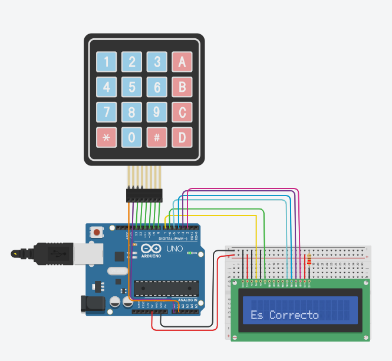

Sistema de Contraseña
Objetivos
Diseñar e implementar un sistema de control de acceso mediante un teclado matricial y una pantalla LCD, validando una clave numérica para activar una respuesta visual y sonora.
Materiales Utilizados
- Arduino Uno: Microcontrolador que procesa la entrada del teclado y valida la contraseña.
- Teclado Matricial (Keypad 4x4): Periférico de entrada que permite al usuario ingresar los dígitos de la clave.
- LCD 16 x 2 (con o sin I2C): Pantalla de cristal líquido para mostrar el estado del sistema ("Ingrese Clave", "Correcto", "Error").
- Resistencias: Utilizadas para proteger el circuito y gestionar las señales de los componentes.
- Protoboard y Jumpers: Para la interconexión de todos los elementos.
Funcionamiento del Sistema
El sistema solicita una clave de 4 dígitos. Al presionar las teclas, el LCD muestra asteriscos para mayor seguridad. Si la clave coincide con la almacenada, el LCD muestra "ACCESO CORRECTO". De lo contrario, se muestra "ERROR / ALARMA" y el Buzzer se activa intermitentemente.
Implementación

Conclusiones
- Gestión de Matrices de Entrada: Se comprendió el funcionamiento del teclado matricial, el cual ahorra pines del Arduino mediante un escaneo de filas y columnas para detectar la tecla presionada.
- Lógica de Validación: La implementación de arreglos (arrays) y comparaciones lógicas permitió diferenciar entre una cadena de caracteres correcta y una errónea, fundamental para sistemas de seguridad.
- Feedback Multisensorial: Se comprobó la importancia de las interfaces HMI al combinar una alerta visual (LCD) con una auditiva (Buzzer), mejorando la experiencia y la advertencia para el usuario.
Ver Simulacion
🚀 Abrir Proyecto en TinkercadEstado de la prueba: ✓ Funcional